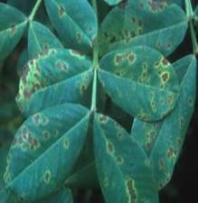
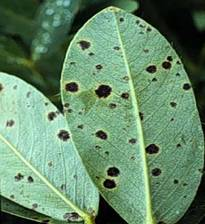
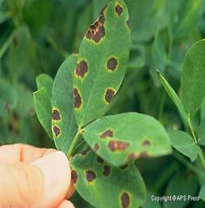

GROUNDNUT :: MAJOR DISEASE :: TIKKA LEAF SPOTS
Symptoms
The disease occurs on all above ground parts of the plant, more severely on the leaves. The leaf symptoms produced by the two pathogens can be easily distinguished by appearance, spot colour and shapes. Both the fungi produce lesions also on petiole, stem and pegs. The lesions caused by both species coalesce as infection develops and severely spotted leaves shed prematurely. The quality and yield of nuts are drastically reduced in severe infections.
|  |  |  |
Symptoms |
||
Pathogen C. arachidicola(Sexual stage: M. arachidis)
The pathogen is intercellular and do not produce haustoria and become intracellular when host cells die. The fungus produces abundant sporulation on the upper surface of the leaves. Conidiophores are olivaceous brown or yellowish brown in colour, short, 1 or 2 septate, unbranched and geniculate and arise in clusters.
Conidia are sub hyaline or pale yellow, obclavate, often curved 3-12 septate, 35- 110 x 2.5 - 5.4 µm in size with rounded to distinctly truncate base and sub-acute tip. The perfect stage of the fungus produces perithecia as ascostromata. They are globose with papillate ostiole. Asci are cylindrical to clavate and contain 8 ascospores. Ascospores are hyaline, slightly curved and two celled, apical cell larger than the lower cell.
P. personata(C. personata) (Sexual stage: M. berkeleyii)
The fungus produces internal and intercellular mycelium with the production of
haustoria. The conidiphores are long, continuous, 1-2 septate, geniculate, arise inclusters and olive brown in colour. The conidia are cylindrical or obclavate, short, measure
18-60 x 6-10µm, hyaline to olive brown, usually straight or curved slightly with 1-9 septa, not constricted but mostly 3-4 septate. The fungus in its perfect stage produces perithecia as ascostromata which are globose or broadly ovate with papillate ostiole. Asci are cylindrical to ovate, contain 8 ascospores. Ascospores are 2 celled and constricted at septum and hyaline.
Favourable Conditions
- Prolonged high relative humidity for 3 days.
- Low temperature (20 C) with dew on leaf surface.
- Heavy doses of nitrogen and phosporus fertilizers
- Deficiency of magesium in soil.
Disease cycle
The pathogen survives for a long period in the infected plant debris through conidia, dormant mycelium and perithecia in soil. The volunteer groundnut plants also harbour the pathogen. The primary infection is by ascospores or conidia from infected plant debris or infectd seeds. The secondary spread is by wind blown conidia. Rain splash also helps in the spread of conidia.
Management
- Remove and destory the infected plant debris.
- Eradicate the volunteer groundnut plants.
- Keep weeds under control.
- Treat the seeds with Carbendazim or Thiram at 2g/kg.
- Spray Carbendazim 500g or mancozeb 2 kg or Chlorothalonil 2 kg/ha and if necessary, repeat after 15 days.
- Grow moderately resistant varieties like ALR 1.